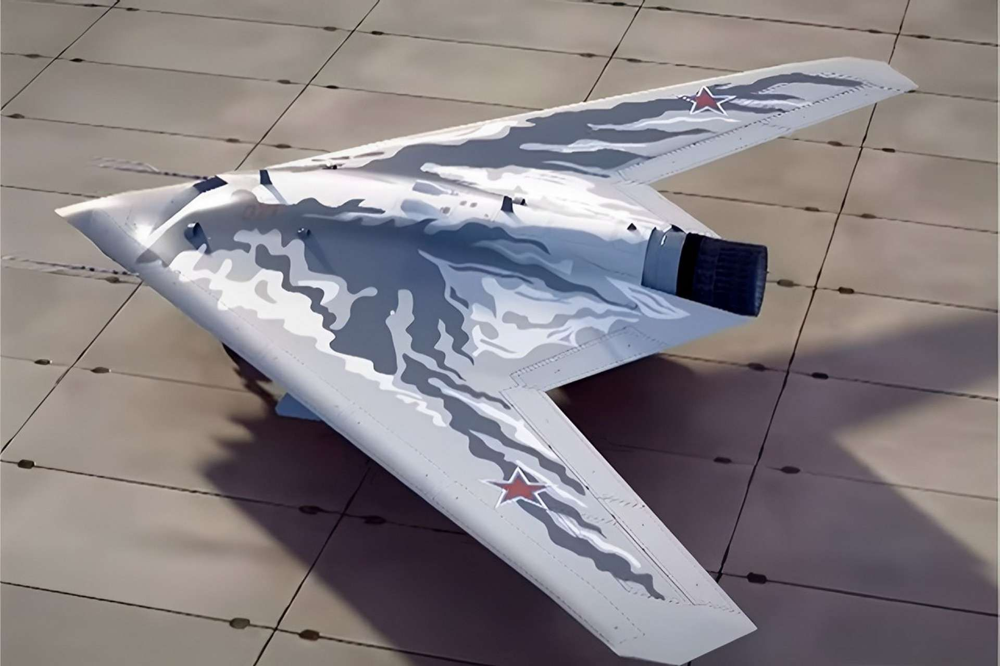
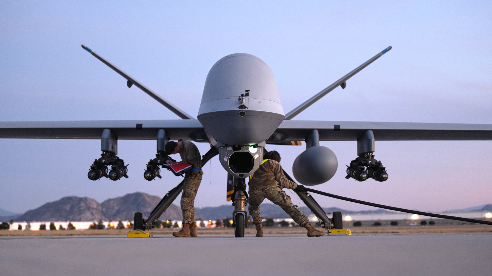
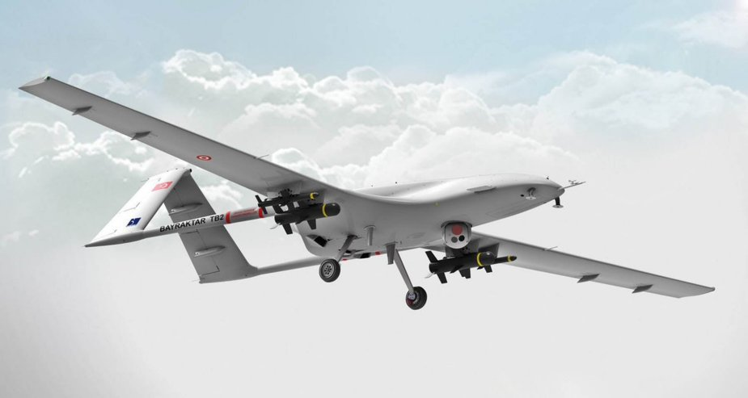
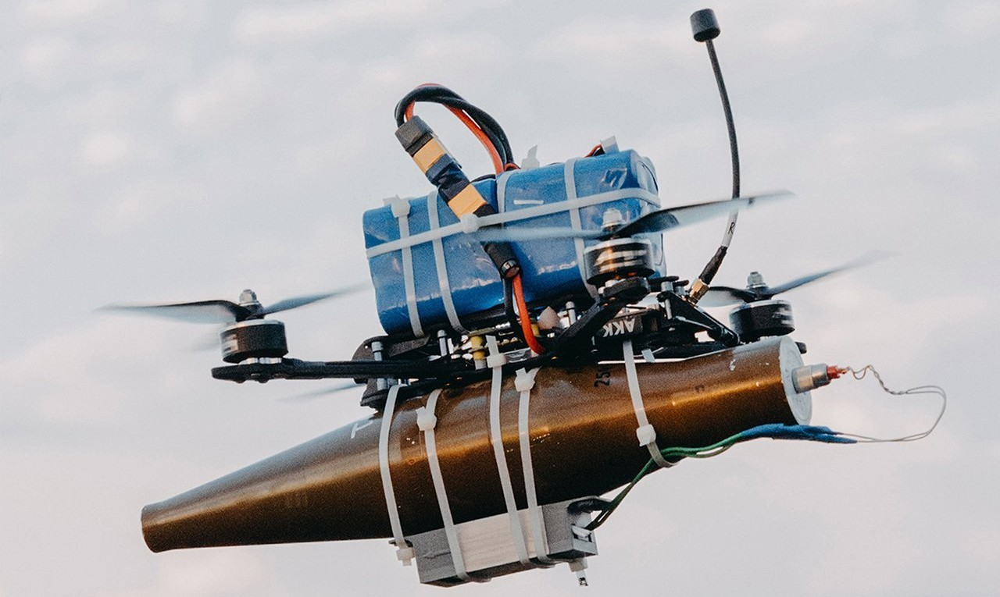

Os drones militares, também conhecidos como Veículos Aéreos Não Tripulados (VANTs) ou UAVs (Unmanned Aerial Vehicles), representam uma das maiores revoluções tecnológicas na história da guerra moderna. Esses equipamentos são aeronaves controladas remotamente ou programadas para voar de forma autónoma, permitindo realizar missões militares sem colocar pilotos humanos em risco direto.
A história dos drones militares não começou recentemente, como muitas pessoas pensam. Na verdade, ela remonta ao século XIX, quando as primeiras tentativas de criar aeronaves sem tripulação foram realizadas. Desde então, os drones passaram por diversas fases de desenvolvimento, influenciadas pelos avanços tecnológicos, pelas necessidades estratégicas dos países e pelas mudanças nas formas de combate.

Sukhoi Su-71

MQ-9 Reaper

Bayracktar TB-2

Drone Kamikaze FPV
A ideia de usar máquinas voadoras sem piloto surgiu com o avanço da engenharia militar e da aviação. Durante o século XIX, os exércitos procuravam formas de atingir alvos inimigos sem colocar soldados em perigo.
Um dos primeiros exemplos históricos ocorreu em 1849, quando o exército austríaco utilizou balões carregados com explosivos para atacar a cidade de Veneza. Esses balões eram controlados pelo vento e representavam uma forma primitiva de drone, pois não tinham tripulação humana.
Apesar de simples, esse episódio demonstrou que era possível atacar alvos à distância utilizando dispositivos voadores automáticos.
Após a Primeira Guerra Mundial, os avanços tecnológicos continuaram. Durante os anos 1920 e 1930, vários países começaram a desenvolver aeronaves controladas por rádio.
O Reino Unido criou o drone chamado Queen Bee , utilizado para treino de tiro antiaéreo. Curiosamente, o termo “drone”surgiu justamente desse modelo, pois “bee” significa abelha em inglês, e o equipamento produzia um som semelhante ao de uma abelha.
Durante a Segunda Guerra Mundial, os drones passaram a ser utilizados de forma mais intensa. Os países envolvidos no conflito investiram em tecnologias para melhorar a precisão dos ataques e reduzir as perdas humanas.
A bomba voadora V1 da Alemanha, considerada como
precursora dos drones modernos e dos mísseis de cruzeiro.
Os Estados Unidos utilizaram drones para treino
militar e testes de armamentos.
Desenvolveram
projetos experimentais para missões de reconhecimento.
O surgimento dos drones militares representa um dos momentos mais importantes na evolução da tecnologia bélica mundial. A necessidade de observar o inimigo, atacar à distância e proteger vidas humanas sempre foi uma prioridade nas estratégias militares. Dentro desse contexto, surgiram as primeiras ideias de aeronaves sem piloto, que ao longo do tempo deram origem aos drones modernos.
O desenvolvimento dos drones não ocorreu de forma repentina. Pelo contrário, foi resultado de vários experimentos científicos, avanços tecnológicos e necessidades militares ao longo da história.
O surgimento dos drones militares foi resultado de vários avanços tecnológicos e necessidades estratégicas ao longo da história. Desde balões explosivos até aeronaves controladas por satélite, os drones evoluíram e tornaram-se ferramentas essenciais nas forças armadas modernas.
Hoje, os drones são considerados uma das tecnologias militares mais importantes do mundo, influenciando profundamente as estratégias de defesa e combate.